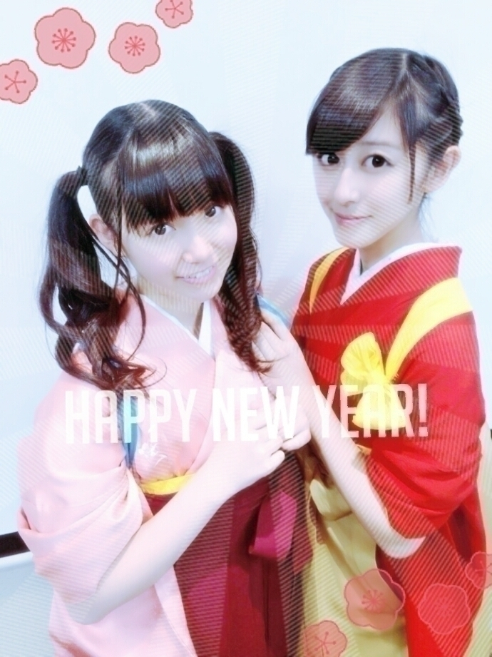
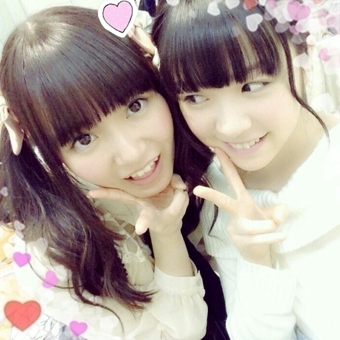
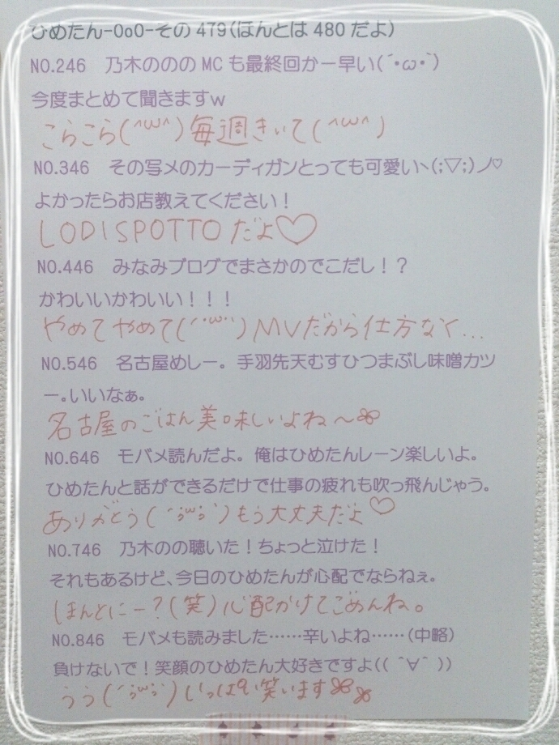

| 2015/01 04 Sun | ひめたん-OoO-その510 |
あけましておめでとうございます\❁/

なんかこの加工......
めでたい感じするね\( ˆoˆ )/いっか！笑
2015年もどうぞ
よろしくお願いします♡
今年の抱負は ポジティブ\( ˆoˆ )/
かずみんじゃないけど
ポジティブにいこう\( ˆoˆ )/
今これ読んでる万理華が
泣いて喜んでると思います\( ˆoˆ )/
万理華に心配かけない1年にする！
前にも書きましたが
私にとっては高校卒業の年でもあります
何だろう、高校生ってだけで
ひとつ守られてる感じがするけれど
春からはそれがなくなるわけで......
良い意味でも悪い意味でも。
だから自覚と責任を持って
頑張って行こうと思います( ˆoˆ )
きっとお仕事の幅は広がるだろうし
攻めの姿勢を忘れない1年に
なればいいな～＊
学割とかゆーのもなくなる( ˆoˆ )んだ
乃木坂にいると
本当にたくさんの経験をさせていただけて
幸せなことなんだけれど
それを成長に繋げるかどうかは
私次第だとは常々感じているので
今年は今までよりもさらに
いろんなことを吸収できるような私で
在り続けたい......
とにかく！
さらにきらきらしたい！
そしてみなさんに少しでも
幸せを届けられる存在でいたいです♡
いつも支えてもらってばかりで
本当に本当に感謝です
いつもありがとう( ´•̥ω•̥` )
今年はさらにみなさんとの思い出が
増えるのかなあ～
一緒に楽しい1年にしようね♡♡
びーむも頑張りますが
びーむだけでなく
いろんな武器を身に付けたいです(<・ω・>)
あ、武器ってあれだよ？
必殺技って意味ではないよ？
そして、興味のある
声を使ったお仕事にも携わりたい。
ラジオとか、ナレーションとか......
もともと好きな分野だったので
いつか出来たらいいなと思っていましたが
去年乃木のののMCを経験したことで
「自分のやりたいことはこれだ！」
ってさらに感じています(∗´ω`∗)
もっともっと頑張らねば！
あとはラジオリスナーとして
今年もたくさん聴くぞ～
アニスパも最後まで聴くぞー！
あ、ここで不意に告知はさもかな
新年から2人喋りになりました乃木のの
次回は秋元・中元です！
聴いてね～ゆるゆるな感じよ～(﹡ƠωƠ﹡)
でもね真夏さんとは
テンションが同じなんだろうな
すごく話しやすくて楽しかった♡

ぎゃん～こっち見てる～((o(｡>ω<｡)o))
なんだこのみり愛かわいすぎるよぉ
みり愛は今年高校入学だって！
またごはん行こうね～♡

気がつけば
1stアルバム発売日まであと少し～
ということで予習しよう（＾ω＾）
私たち学生チームが
ジャケットに載ってるのはtype-C！
A,Bにはブックレットがついてるんだけど
それぞれ違うんだよ～
どちらも全員載ってます
つまりひめたんは
AにもBにもCにもいるから
どれでも好きなものをゲットしてね♡
そして参加楽曲は
バレッタ
涙がまだ悲しみだった頃
あの日 僕は咄嗟に嘘をついた
13日の金曜日
失いたくないから
自由の彼方
全部私にとって
思い出深い、大切な曲。
新録の 自由の彼方 も早速大好き♡
ちなみに今
10福チェーン対抗のキャンペーンやってて
ひめたんはチームキャラアニなので
キャラアニさんで買ってくださると
橋本、和田、かりん、中元が
お渡しするのでよかったら♡♡
来てくださる方は
楽しみにしています( ˆoˆ )
私たちの念願のファーストアルバム
たくさんのひとの手に届いて
何かしら心に響きますように。
結成から今までの私たちが
ぎゃんとつまったアルバムです
よろしくお願いします～＊
らりん姉さん今年も愛してるよ～

のぎ天は観てくれたー？
のぎ天は次回お話しますね♡
今夜は乃木どこ！
そして明日はRの法則！

 写メ多めの日記いいですよ！
写メ多めの日記いいですよ！
ところでひめたんに噛み付いてるのは誰だ？
前回の日記の下の方の写メだよね
愛未だよ（＾ω＾）ジョンソン
質問なんだけど...
1月からのアニメ何見ますか？
それがね～どんなのがあるか
今ふわっとしかわかんないんだよね
なんかオススメ教えて欲しい♡
ひめたんはおせちの中で何が一番好き？
栗きんとん( ˆoˆ )
なんかねおせちの中身の
好き嫌いが激しいんですよ私。
ひめたんの日記の
コメント欄下２ケタに46を踏んだ方へ
手書きでコメ返するコーナー
＼ ひめたん46 ／


いつもたくさんのコメント
ありがとうございます
コメント読んでたら
一緒に年越ししたみたい～
年末年始忙しいのにみんなありがとう♡
今年もいっぱいお話しようね(＊´v`＊)
ねーみんなはどんなお正月過ごしたの？
ひめはね、お買い物に行ったんだけど
優柔不断って大変だよね～ふふ～
日記で報告するの
遅くなっちゃったけれど
755やめることにしました(´・ω・｀)
これからは日記やメール
待ってて欲しいです♡
遊びにきてくれたみなさんありがとう！
(＊´・ω・＊)
コメント(1326)
2015/01/04 23:30